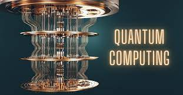
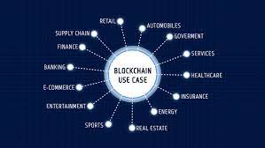

Current Technology Curiosities
Curiosity 1
Did you know that artificial intelligence (AI) is being used to create deepfake videos? Deepfakes are highly realistic manipulated videos that can make it appear as though someone said or did something they didn't. This technology has both creative and potentially harmful implications.
Learn more about deepfake technology: Deepfake Technology - OpenAI Blog
Curiosity 2
Quantum computing is an emerging field that has the potential to revolutionize the world of technology. Unlike classical computers that use bits to represent information as 0s and 1s, quantum computers use quantum bits or qubits. Qubits can exist in multiple states simultaneously, allowing for exponentially faster calculations and solving complex problems.
Explore the world of quantum computing: IBM Quantum Computing
Curiosity 3
The Internet of Things (IoT) is a network of interconnected devices that can communicate and exchange data. It encompasses everyday objects such as smart thermostats, wearables, and even connected vehicles. With the increasing adoption of IoT, it is estimated that there will be over 75 billion connected devices by 2025.
Discover more about the Internet of Things: Internet Society - Internet of Things
Curiosity 4
Blockchain technology, popularized by cryptocurrencies like Bitcoin, is a decentralized and transparent system for recording transactions. Its applications go beyond finance and can be used in various industries such as supply chain management, healthcare, and voting systems, providing enhanced security and traceability.
Learn about the potential of blockchain technology: IBM Blockchain
Curiosity 5
Virtual reality (VR) and augmented reality (AR) are immersive technologies that are transforming the way we experience digital content. VR creates a simulated environment, while AR overlays digital elements onto the real world. These technologies have applications in gaming, education, healthcare, and more.
Explore the possibilities of VR and AR: Virtual Reality Society
Curiosity 6
5G is the next generation of wireless technology that promises faster speeds, lower latency, and greater connectivity. It has the potential to enable advancements in autonomous vehicles, smart cities, telemedicine, and the Internet of Things. 5G networks are being rolled out globally, revolutionizing the way we communicate and interact with technology.
Learn more about the capabilities of 5G technology: Qualcomm - What is 5G?